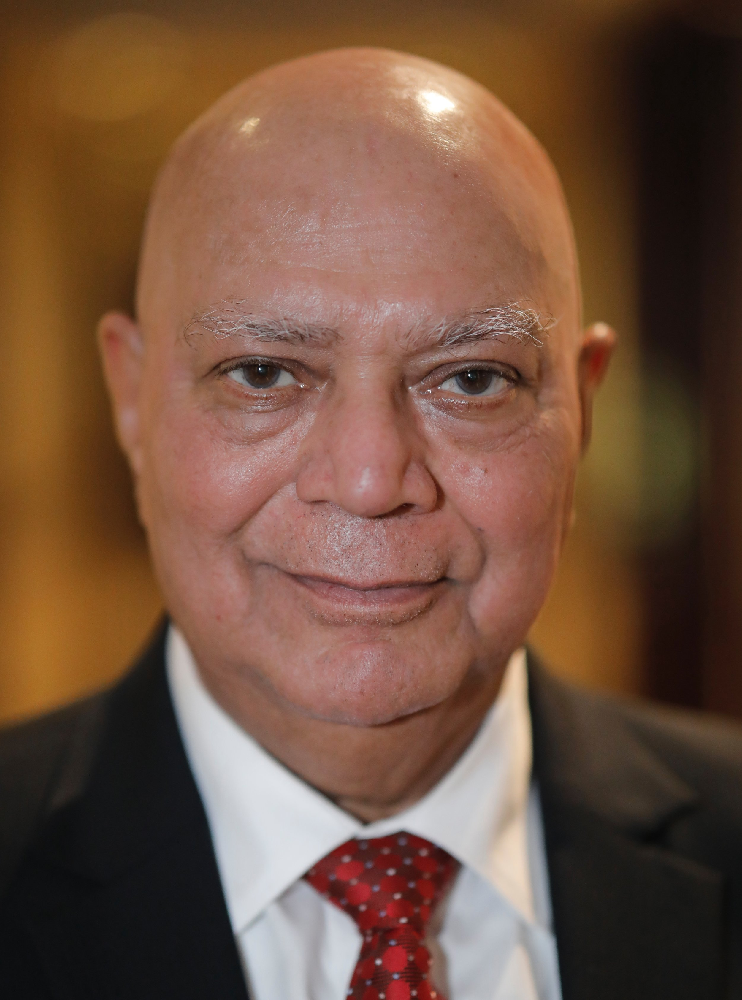
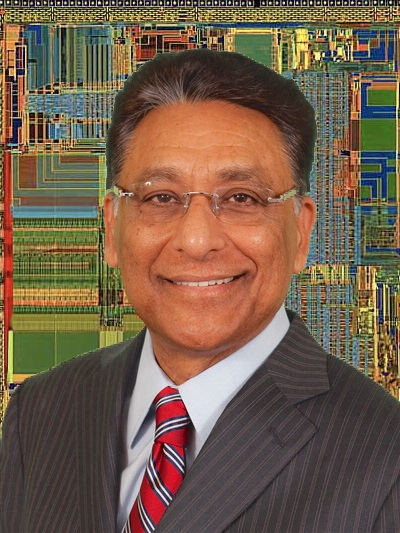
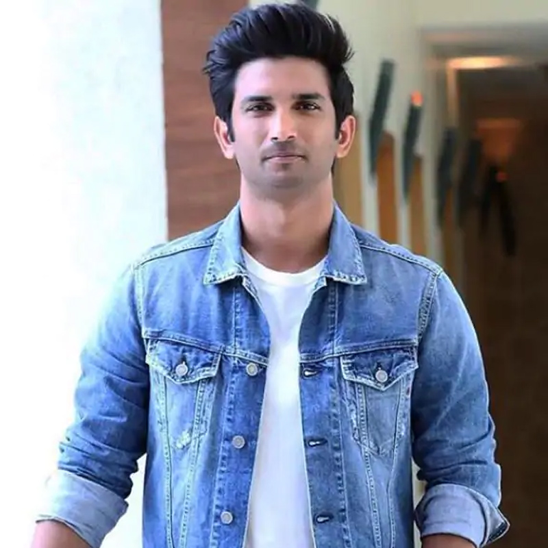
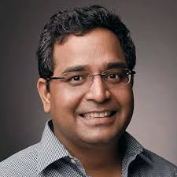

Dr.Raj Soin
CLASS 1969,Mechanical engineer
He joined Firestone as industrial engineer and also as the head of Industrial engineering at Williams
International.
He also started an engineering company, Modern Technologies Corporation, focused on consulting services
for US defense department. He DONATED 5CR to the prestigious institution . We grew the
company to over four thousand engineers with over forty offices across various countries and serving
various agencies and industries
His focus has been mainly in health care and education. Some of these have resulted in creation of
Sukhdev Raj Soin Hospital

Sh.Vinod Dham
Better known as 'Father of the Pentium Chip', Sh. Vinod Dham has Over 40+ years of
experience in developing semiconductor products, technologies and Venture Capital. He has
been named as one of the top 25 executives in the computer industry and one of the top 100
most influential Asian Americans. Recently, he has been involved in mentoring start-up
entrepreneurs, as an Angel Investor.He DONATED 1CR to the instituiton. He has committed
Rs. one Crore to start a "Vinod Dham
Centre for Semiconductor Research" in Delhi Technological University.

Sushant Singh Rajput
Late Sushant Singh Rajput, a celebrated Bollywood actor and DTU alumnus, is remembered not
only for his stellar performances but also for his intellect and passion for learning. Before pursuing
acting, he was a student of Mechanical Engineering at Delhi Technological University (then DCE) and
excelled academically. Known for his roles in films like MS Dhoni: The Untold Story and Chhichhore,
Sushant's journey from engineering to Bollywood is an inspiration to many. His curiosity about science,
space, and innovation showcased his multifaceted personality, leaving behind a legacy that continues to
inspire countless individuals.

Vijay Shekhar Sharma
Vijay Shekhar Sharma, the founder of Paytm, is a proud alumnus of Delhi Technological
University (DTU). Graduating in 1998 with a degree in Electronics and Communication Engineering, he is a
visionary entrepreneur who revolutionized digital payments in India. Starting with humble beginnings,
Vijay Shekhar Sharma built Paytm into one of India's leading fintech platforms, transforming the way
Indians transact. His innovative spirit and resilience make him an inspiring figure for DTU students and
aspiring entrepreneurs across the country.